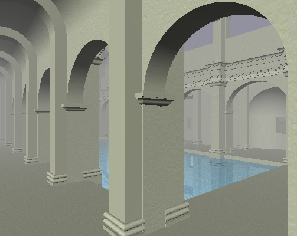

Copyright © 1994, 1996, 1999 Information Geometers Ltd and The University of Bath

The svLis model of the Great Bath in Aquae Sulis as it was in 200 AD
The svLis geometric modeller has been used (among other things) by archaeologists for reconstructing models of ancient and long-since-crumbled buildings. One such reconstruction was of the Roman remains in Bath.
Bath is a city in the west of England that has existed since before Roman times. When the Romans came they built one of the most famous spa complexes in the ancient world, with hot springs and a temple at their centre. The Latin for Bath was Aquae Sulis - waters of Sul. Sul was a pre-Roman Celtic goddess who presided over the hot springs, and the Romans adopted her. They wrote the letter U as V, so Aquae Sulis became Aqvae Svlis, though they pronounced `Svlis' (as far as anyone can tell) with the modern U sound: soo-liss, with the emphasis on the first syllable.
The Great Bath (ray-traced by svLis above) still exists and still holds water (I've been swimming in it), but the building around it has gone. The blue colour is perhaps over-romantic -- today the water is more khaki green, and I suspect that it was when the Romans were here too. Sadly, you can no longer swim in it either. The waters are infected (and have been since Roman times) by a meningitis-causing bacterium, so splashing about in them is not now allowed. There is a project under way to renovate the whole Spa and to connect it to a deeper-drilled and therefore uncontaminated hot spring in time for the Millennium.
The svLis geometric modeller has a Latin motto: PERFICTA PERFRACTA QVAERENDO PERFECTA, which should not be too difficult for you to translate, especially if you've read the svLis book and therefore know how svLis works. As far as I can tell at the time of writing, there is no really good Latin dictionary on the web. However, you may care to check here.